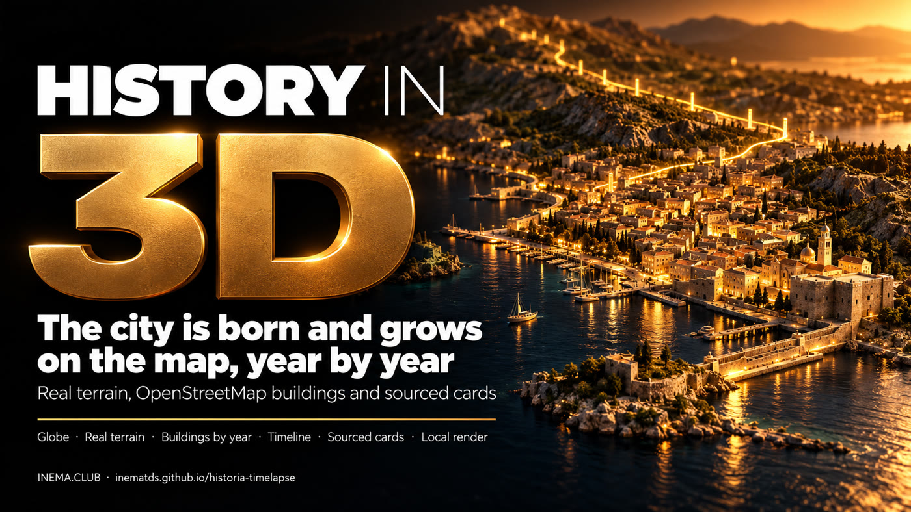
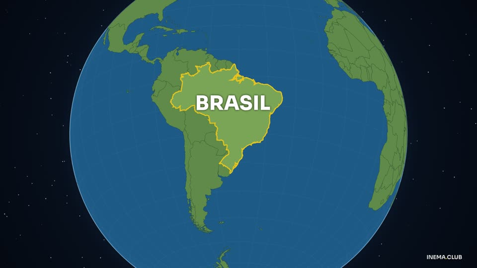
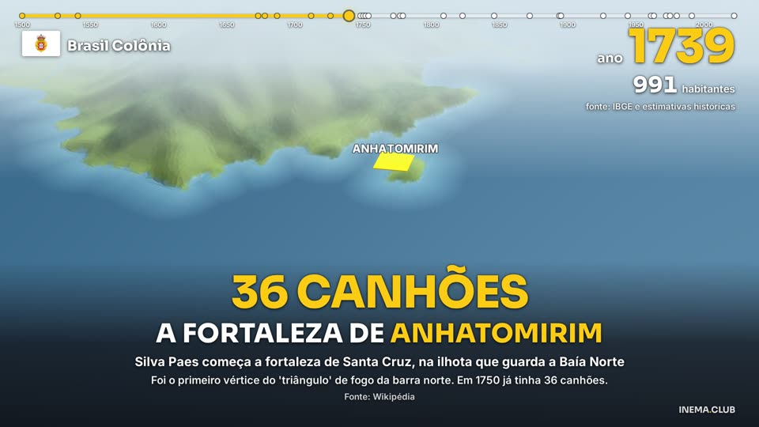
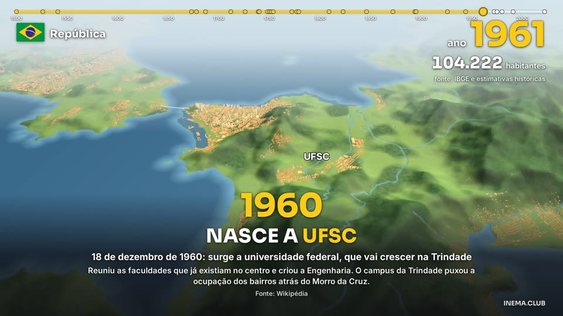
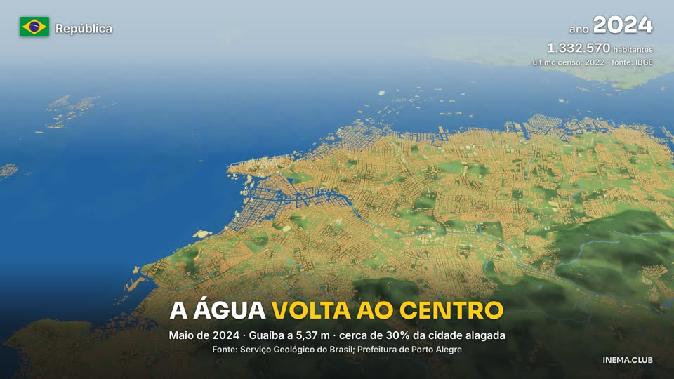

From the first settlement to today: the city is born and grows in 3D, with the year, population, the flag of each era and cards with sources. No video AI and no render cost.

historia-timelapse is a set of scripts that turns the history of a city into a 3D video, as a timelapse. It uses the real terrain relief and the OpenStreetMap buildings: each building "is born" in the year its neighborhood was settled, and the city grows on screen along with the IBGE population counter. Events appear in cards with a number, an explanation and a source. To use it, you need a computer with a graphics card, Python and Node, and historical research on the city.
Made with this engine, on the Aventuras INEMA channel (in Portuguese). Each city has a version without narration and a narrated one.
6 min: shell mounds, Dias Velho, fortresses, Azoreans, the 1777 Spanish invasion, bridges and landfills. Narrated: here. Open on YouTube
7 min: Tupinambá, France Antarctique, the Court in 1808, Empire and Republic. Narrated: here. Open on YouTube
6 min: from the Jesuit village to the Santa Cruz estate and the port. Narrated: here. Open on YouTube
5 min, with the camera in the streets and historic buildings. Narrated: here. Open on YouTube
1min35, narrated: the same Porto Alegre with terrain and buildings lit by GPU path tracing — real shadows and buildings rising in their neighborhood's year. Open on YouTube
1min35, narrated (the pilot): founding, Ragamuffin sieges, the 1941 flood, the Mauá Wall and the 2024 flood. Open on YouTube
Real data instead of made-up images.
30 m Copernicus terrain and OpenStreetMap buildings (with Microsoft's open dataset where OSM has little). Each building gets a year from its neighborhood and the population curve.
Each event has a title, a big number, an explanation and a source. The year, population (IBGE censuses) and the flag of the regime change in the corner of the screen.
A globe zooming in to the city, a timeline, fleets sailing, sieges, fortresses, bridges being drawn, landfills growing in color and floods rising.
Everything runs on your machine: deck.gl in Chrome with the GPU, about 0.1 s per frame at 1080p.




Linux with a graphics card, Python 3, Node 20+ and ffmpeg. The data are public files downloaded by a script; there is no API and no cost.
Python, Node, ffmpeg and git.
sudo apt install python3-venv ffmpeg git # Node 20+: via nvm (nvm install 20) or NodeSource — apt's nodejs is too old
The render uses Chrome with the GPU (Vulkan). Without Vulkan, run with GL="--use-angle=gl" before the command (slower).
# ~0.1 s per frame at 1080p on an NVIDIA GPUThe regional OSM extract is hundreds of MB (southern Brazil, ~430 MB). Each terrain tile is 20–50 MB.
# everything stays in the dl/ folder (outside git)Each city lives in cidades/<id>/. The scripts read the city from the CIDADE variable. The examples use Florianópolis (floripa): replace it with your city id in every command and keep export CIDADE=<id> in the terminal (without it the scripts use poa).
Creates the Python environment (venv = a folder with the libraries for this project only) and installs Playwright, which opens Chrome to record the frames.
git clone https://github.com/inematds/historia-timelapse && cd historia-timelapse python3 -m venv .venv .venv/bin/pip install osmium tifffile imagecodecs \ shapely numpy pyproj scipy pillow cd motor && npm i && npx playwright install --with-deps chromium && cd ..
bbox is the map rectangle in degrees: west, south, east, north (you can draw it at bboxfinder.com). municipio_osm is the exact name of the municipality in OpenStreetMap. centro_antigo is the point where the city began.
# cidades/floripa/config.json { "nome": "Florianópolis", "bbox": [-48.80, -27.92, -48.33, -27.33], "pbf": "dl/sul.osm.pbf", "pbf_url": "https://download.geofabrik.de/south-america/brazil/sul-latest.osm.pbf", "municipio_osm": "Florianópolis", "centro_antigo": [-48.5490, -27.5965], "pais_microsoft": "Brazil" } # optional: "efeitos" (bridges, forts, landfills), "tex" (texture size), # "agua_baixa_m", "pop_modelo_extra" — see cidades/floripa/config.json
The script downloads the OSM extract (.pbf format), the terrain tiles that cover your bbox and, with --microsoft, the Microsoft buildings for places where OSM has few buildings.
export CIDADE=floripa .venv/bin/python -I scripts/baixar_dados.py --microsoft
Three files go in cidades/<id>/dados/pesquisa/. Copy the Florianópolis ones as a template and replace the content.
# populacao.json — censuses and estimates { "serie": [ { "ano": 1872, "pop": 25709, "fonte_url": "https://..." } ] } # eventos.json — one event per item, with coordinates and source { "eventos": [ { "id": "ponte-hercilio", "ano": 1926, "titulo_curto_PT": "A PONTE HERCÍLIO LUZ", "legenda": "...", "detalhe": "...", "numero_impacto": "821 METROS", "local": { "lat": -27.5935, "lon": -48.5649 }, "fontes": ["https://..."] } ] } # bairros_epocas.json — year each neighborhood began to be settled { "bairros": [ { "bairro": "Trindade", "ano_aprox_ocupacao": 1960 } ] }
Cuts out buildings, water and neighborhoods, builds the terrain with the sea, gives each building a birth year and prepares bridges, forts and landfills.
.venv/bin/python -I scripts/extrai_osm.py # uses "pbf" from the config .venv/bin/python -I scripts/extrai_msbuild.py # only if you downloaded the Microsoft buildings .venv/bin/python -I scripts/prep_terreno.py .venv/bin/python -I scripts/prep_predios.py .venv/bin/python -I scripts/modelo_anos.py .venv/bin/python -I scripts/extrai_feicoes.py .venv/bin/python -I scripts/prep_efeitos.py
roteiro.json is an object with a "blocos" list (plus "linhas", "fortes", "areas" and "regimes" if you use them). For a new city you write this file by hand, or copy and adapt cidades/floripa/roteiro_floripa.py, which builds it from eventos.json. Each block has the years (start, event year, end), the starting and arriving camera, the duration and the card. In Florianópolis it is assembled by roteiro_floripa.py from the research; use it as a template.
# one block of roteiro.json { "id": "ponte-hercilio", "anos": [1895, 1926, 1927], "pulo": 2.0, "dur": 9.5, "cam": [ {"lon": -48.552, "lat": -27.600, "zoom": 14, "pitch": 58, "bearing": -40}, {"lon": -48.570, "lat": -27.602, "zoom": 13.7, "pitch": 60, "bearing": -70} ], "cartao": { "numero": "821 METROS", "titulo": "A ponte Hercílio Luz", "legenda": "...", "detalhe": "...", "fonte": "IBGE" }, "destaca": ["linha:hercilio"] } # anos: [start, event year, end]; "pulo": seconds in which time runs up to the event year # cam: center lon/lat, zoom (12 = neighborhood, 14 = block), pitch (tilt 0–60), bearing (heading in degrees) # "destaca": "linha:<id>" | "forte:<id>" | "area:<id>" — ids defined in "efeitos" in the config and listed at the top of the script # adjust the camera by looking at the frames from step 6 python3 cidades/floripa/roteiro_floripa.py .venv/bin/python -I scripts/gerar_cena.py # generates cidades/floripa/cena/cena.js
Records only the requested seconds, so you can look at framing, cards and effects before the whole video.
cd motor && node render.mjs ../cidades/floripa/cena --quadros 20,60,120 && cd .. # the q_*.jpg images stay in cidades/floripa/cena/
The render is done in 60 s chunks (the browser restarts between them, to avoid running out of memory). Put your own instrumental tracks (.mp3) in cidades/floripa/musica/; they play in alphabetical order, looping.
bash motor/render_trechos.sh cidades/floripa/cena cidades/floripa/final/video.mp4 .venv/bin/python -I scripts/montar_musica.py # cidades/floripa/final/audio.wav ffmpeg -i cidades/floripa/final/video.mp4 -i cidades/floripa/final/audio.wav \ -map 0:v -map 1:a -c:v copy -c:a aac -shortest cidades/floripa/final/floripa.mp4
The narration is an audio layer over the same video: one text per block in cidades/<id>/narracao.json, fitted to the start of each event. The recording uses the author's local voice engine (cardshorts, outside this repository); with another voice, record one file per block and fill in narracao/tempos.json.
# narracao/tempos.json, if you record with another voice: {"<block>": {"dur": 6.2, "wav": "path.wav", "texto": "...", "ouvido": "..."}} python3 scripts/narrar.py # only with cardshorts; with another voice, skip it and fill tempos.json python3 scripts/montar_narrada.py # final/audio-narrado.wav ffmpeg -i cidades/floripa/final/video.mp4 -i cidades/floripa/final/audio-narrado.wav -map 0:v -map 1:a -c:v copy -c:a aac -shortest cidades/floripa/final/floripa-narrado.mp4
The same video with terrain and buildings lit by path tracing in Mitsuba 3: shadows between buildings, a scale-model look and buildings rising in their own year. The engine still draws the HUD, cards and effects on top. About 45 min for 95 s of video (the normal render takes ~5 min). Details (in Portuguese): docs/RENDER-LUZ-REAL.md.
.venv/bin/pip install mitsuba==3.9.1 drjit==1.5.0 mapbox-earcut bash motor/render_luz.sh cidades/floripa/cena cidades/floripa/final/floripa-mitsuba-video.mp4 64
What already exists and what is coming.